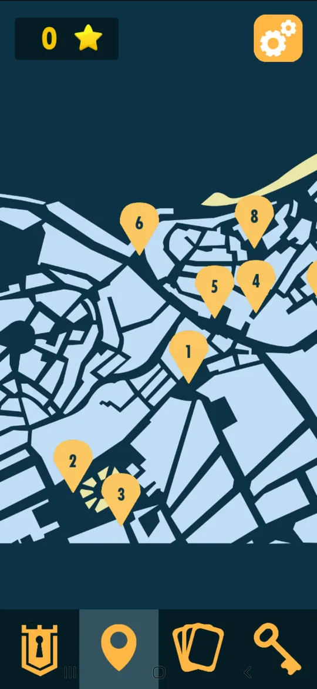
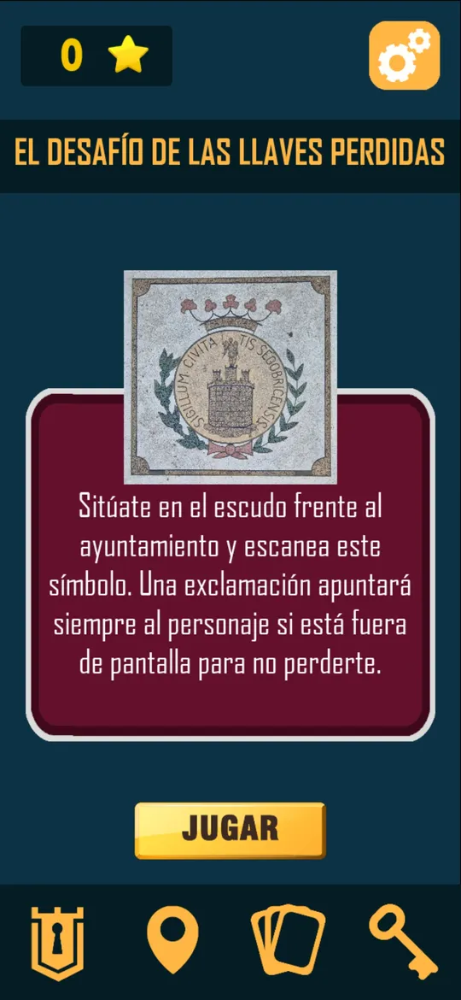
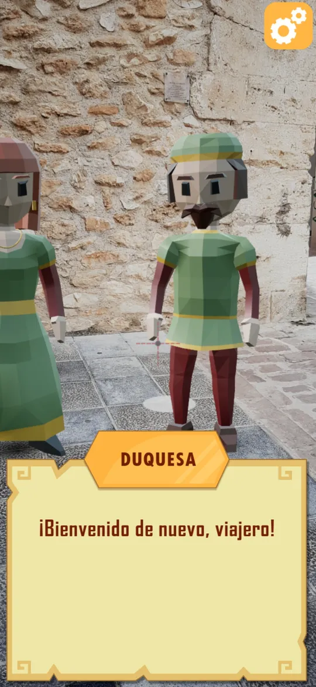
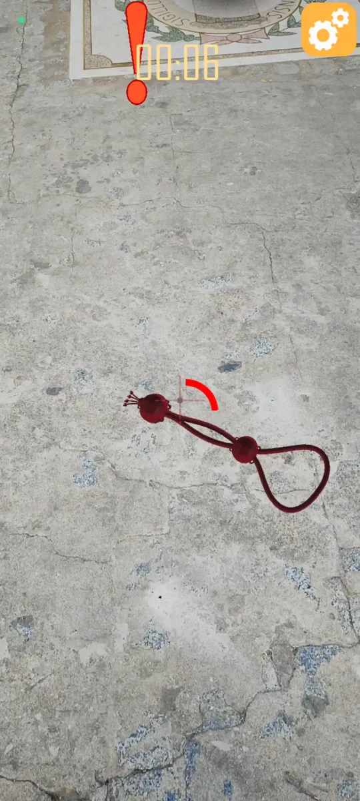
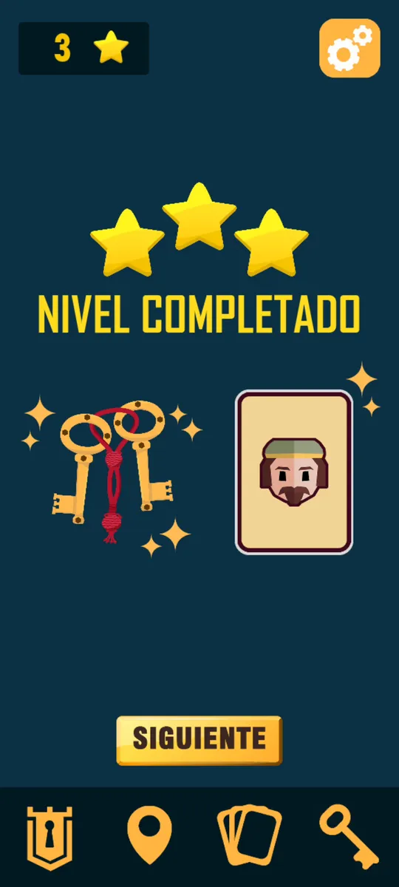
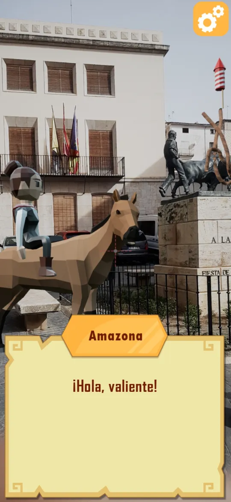
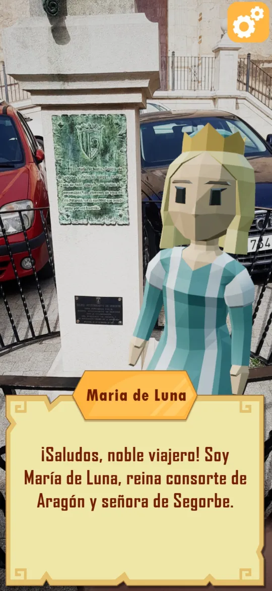
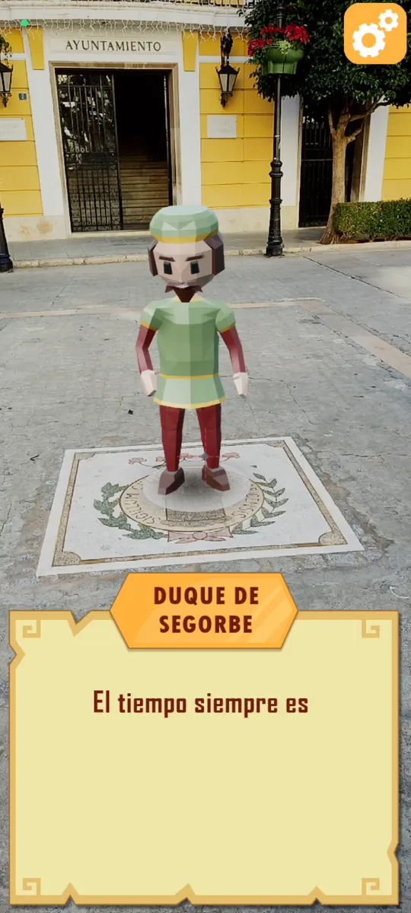

A tourism game that turns the streets of a historic town into the level. Characters from Segorbe's past appear in augmented reality and challenge you to learn their story.
A real playthrough recorded in front of Segorbe town hall.
My role
AR and gameplay programming, dialogue UI
Team
GameRS Videogames Research Group
Client
Segorbe town hall
Built with
Unreal Engine 5, Google ARCore
Platform
Android · Google Play
The challenge
Classic tourist guides are useful but easy to skim and forget. The town hall wanted visitors to walk through Segorbe and actually remember its history, from Iberian and Roman roots to its medieval walls.
How it plays

1. Walk to a landmarkThe map shows the ten spots around town.

2. Scan a real objectEach spot has a symbol to point the camera at.

3. A character appearsThey talk to you through the dialogue UI I made.

4. Solve their challengeHere, find the lost keys and their cord around the square.

5. Earn a key gemStars, a piece of the city key and the character card.
The Dukes of Segorbe wait in Plaza del Agua Limpia, botanist Carlos Pau sets a greenhouse challenge in the Botanical Garden, and in the Cathedral a bishop asks you to play the bells. Collect every gem and the town names you an honorary Guardian.
What I did
Programmed the game in Unreal Engine 5 with ARCore, including the augmented reality.
Designed and built the dialogue UI that the characters use to talk to the player.
add: what exactly you built (image tracking, character placement, minigames?)
Characters in the street
Figures from Segorbe's history appear on the real streets where their stories happened. The dialogue boxes they speak through are my UI.

An amazon on horseback

María de Luna, queen consort of Aragon

The Duke of Segorbe, at the town hall
Results
Published on Google Play in February 2024. It can only be played in Segorbe.
Shown at Guerrilla Game Festival 2024 and Tourism Day Benidorm.